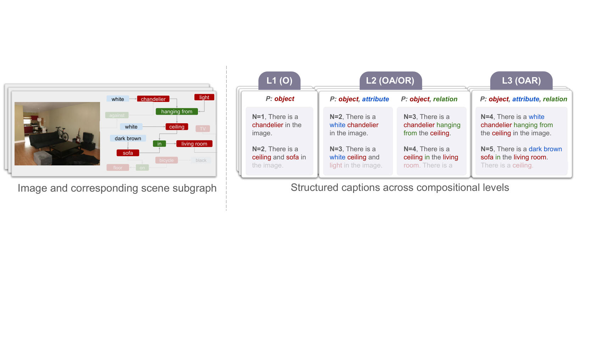
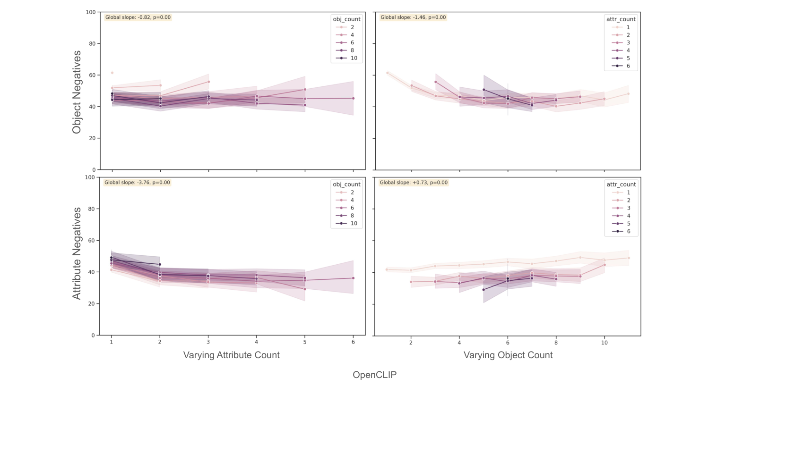

Diagnosing the Sources of Compositional Failure in Vision-Language Models: A Controlled Analysis
论文笔记: Diagnosing the Sources of Compositional Failure in Vision-Language Models: A Controlled Analysis
复杂描述检索失败，不能一概归因于“模型不会把概念组合起来”。 COMPASS 将诊断拆成两个方向：整句相比分开判断损失多少，以及对象、属性、关系各自增多时，哪项技能退化。最有价值的现象是：CE-CLIP 的整句检索已经优于分解检索，却仍受同类信息增多的影响。
读完应记住四点：
- 匹配同一种语义扰动，再比较整句与分解后的“全部答对”，比只看复杂度曲线更有诊断力。
- 整合差距的符号因模型和结构而异；不能拿一个差值给模型组合能力排总榜。
- 同类数量增加通常对应性能下降，异类信息有时提供上下文；但“cross-load 都有益”不符合全表。
- 这是检索行为的受控分析，尚未证明模型内部存在同类表征容量竞争，也没有完全排除文本捷径。
1. 背景信息
- 团队与版本：The Ohio State University、Netflix Research；arXiv v1，2026-09-25。原文未注明已录用会议。
- 材料：阅读了官方 HTML 全文及附录，并用PDF核对原图、生成提示词和表格；未运行作者代码或复现实验。
- 工作性质：评测框架与诊断数据集，没有提出或训练一个新的 VLM。
2. 关键问题：究竟不会组合，还是信息一多连单项也认不准？
沿用论文 Figure 1 的客厅案例：“客厅里有一张深棕色沙发，还有天花板。” 场景图包含三个对象（沙发、客厅、天花板）、一个属性（深棕色）、一个关系（在……里），所以复杂度为 $N=5$，并非五个词。
如果模型更偏好把“沙发”改成“椅子”的错误描述，我们还不知道原因：它可能连沙发都没认对，也可能在短句中认得沙发，但把全部信息放进一个句向量后丢掉了区别。只报告“句子越复杂，准确率越低”，分不开这两种失败。

Figure 1，原图，作者，CC BY 4.0。看右侧：对象 O、属性 A、关系 R 的组合决定结构层级，原语总数决定复杂度；二者不是同一根轴。

已有 CREPE 强调随复杂度的退化，SugarCREPE 强调负例质量，VL-CheckList 按技能区分错误。本文新增的是把描述结构、各类原语数量、整句/分解呈现方式结合起来分析，而不只是再造一组更难的负例。（§2–3）
3. 关键方法：同一个错误，放在整句里与单独问，模型表现有何不同？
3.1 先把描述做成可控输入
作者从 Visual Genome 的 5K 图像—场景图对出发，通过最多十步随机游走抽子图，再用 GPT-4o-mini 把指定原语写成自然语言。实际分析聚焦 OA、OR、OAR：对象+属性、对象+关系、三者俱全。复杂度范围分别为 2–12、3–12、4–12。（§3.1）
GPT 负责语言实现，不负责随意补全场景。Figure 4 的关键约束包括 “Do not change the words” 和 “do not introduce new objects or relations”。这用于保持输入场景图与输出描述的对应；提示词约束本身并不证明生成完全忠实。
负例每次只换一个同类型原语，候选不能已出现在该图完整场景图中；随后做语法修正和语义相似度过滤。未被场景图标注，并不保证图像里真的不存在，因此仍可能有假负例。（§3.2、Appendix A）
3.2 第一条测量轴：整合差距
回到沙发案例，整句侧产生五个负例，每个改一个原语；分解侧产生五个小判断，分别针对沙发、客厅、天花板、深棕色沙发、沙发在客厅里。假如整句负例把沙发换成椅子，分解侧也使用同一个替换。
注意：分解属性时仍保留所属对象，分解关系时仍保留两端对象。这里“分解”是让每次只考一个目标原语，不是让每句话只含一个概念；图像始终是同一张完整图像。（§5.1、Figure 2）
令 $s(I,c)$ 为图文匹配分数，$c$ 为整句，$d_i$ 为第 $i$ 个分解描述，带波浪线的是对应负例：
整句必须压过所有负例；分解必须每道都答对，不能用单题平均正确率冒充整句成功率。$\Delta>0$ 表示拆开更容易；$\Delta<0$ 表示整句上下文可能有帮助。（Eq. 1–3）
这一步对齐的是语义扰动，不是完整的统计任务。 整句是 $N+1$ 选一，分解是 $N$ 个二选一全对。在独立均匀随机选择这个示意模型下，机会水平分别是 $1/(N+1)$ 与 $2^{-N}$；$N=5$ 时约为 16.7% 与 3.1%。这是笔记者推导，不是论文实验。真实模型的分解错误也未必独立，但这个区别已说明：差值不能未经校准就解释为“纯粹的联合推理成本”。
3.3 第二条测量轴：数量增加，具体伤害哪项技能？
仍用这条客厅描述，考对象时，四个负例只改对象；考属性时只改属性；考关系时只改关系。每组固定四个负例，因此统一是五选一，避免复杂度增长时候选数也随之增长。（§6.1）
对每种技能 $t$，作者拟合：
$n_O,n_A,n_R$ 是描述中三类原语数。若考属性，$\beta_A$ 是 self-load（同类负载），另外两项是 cross-load（异类负载）。系数表示控制另外两类数量后，每多一个原语对应多少个百分点的变化。使用 OLS，标准误按图像聚类，避免同一图生成多条描述被视为完全独立。（§6.2、Eq. 4）
这仍是条件关联：没有直接操控模型内部容量，数量之外的词频、视觉拥挤程度、负例难度等也可能改变性能。
4. 数据与复现口径：规模数字需要澄清
整合分析按 Table 1 是 24K OAR + 30K OA + 33K OR，共 87K；技能分析正文报告总计 274K。模型包括 OpenCLIP（ViT-g/14，LAION-2B）、SigLIPv2、PE-CLIP、NegCLIP、CE-CLIP、BLIP-L 和 Qwen3-VL-Embedding-8B。最后一个是嵌入模型，不是让通用聊天 VLM 自由生成答案。（§4）
原文有两处不能默默统一：
- [?] 总描述数：§3.1 写 1.38M，但 Table 1 的 ground truth 三行是 47K、46K、45K，合计 138K；论文未解释是否还有未列出的数据。
- [?] 技能数据分项：§6.1 写对象 143K、属性 63K、关系 68K；Table 1 对象列合计却是 127K（45+39+43）。表格全部技能列加起来是 258K。故不能把 274K 当作已由表格交叉核实的数量。
另外，Appendix A 写相似度超过阈值便丢弃：$N\ge6$ 用 0.9，否则 0.95；但随后的“高复杂度阈值更宽松”解释与这个拒绝规则相反。复现时应确认实际实现，并检查复杂度相关过滤是否改变负例难度与样本构成。
5. 关键结果：整合差距反转后，同类负载退化仍存在
5.1 更会处理整句，不代表复杂度问题消失
Table 2 报告跨复杂度汇总的 $\Delta$，下表保留足以看清结论的模型。单位为百分点，± 是复杂度之间的标准差，不是随机种子误差或置信区间。
| 描述结构 | OpenCLIP | SigLIPv2 | CE-CLIP |
|---|---|---|---|
| OAR | 0.83 ± 0.70 | 2.61 ± 1.82 | −5.66 ± 3.45 |
| OA | 2.39 ± 1.23 | 12.65 ± 2.53 | −20.27 ± 5.17 |
| OR | 17.56 ± 1.98 | 8.64 ± 5.04 | −4.96 ± 3.93 |
支持什么？ 整句和分解之间确实存在结构相关、模型相关的行为差异；CE-CLIP 在三种结构上都更擅长整句，不能再用“整句一定比单项更难”描述所有模型。
还不能说明什么？ 负差距本身不是训练干预的因果证据，也可能由分解侧更差造成。应同时看 Appendix C 的两侧绝对分数。Figure 3 进一步显示 NegCLIP、CE-CLIP 在 CREPE 上仍随复杂度升高退化，但那是另一评测集的曲线，不能据此计算 COMPASS 中“多少比例的失败由整合造成”。
5.2 同类负载是更稳定的信号，异类上下文并非总有益
Table 3 的 OAR 设置中，OpenCLIP 对象、属性、关系各自的 self-load 系数分别为 −2.50、−3.32、−2.86；三者均 $p<0.001$。CE-CLIP 的对应值仍为 −1.77、−2.57、−4.89，同样均 $p<0.001$。这与其负整合差距并存，是“改善整句表现并未消除数量敏感性”的关键证据。

Figure 6(a)，原图，作者，CC BY 4.0。上排考对象，下排考属性；左列增加属性数，右列增加对象数。先看右上与左下的下降，再对比另外两格。这里是 OA，不能与前段 OAR 的系数混用。曲线也并非处处线性或单调。

在 OAR 的对象检测中，OpenCLIP 的属性、关系 cross-load 为 +1.21、+2.32，支持异类信息有时提供定位线索。但原文概括需要收紧：OA 的对象检测里，OpenCLIP 增加属性反而对应 −0.82（$p<0.005$）；BLIP-L 在 OR 的关系 self-load 为 +0.80，未标显著。因此准确表述是“同类负载通常更稳定地为负”，不是“所有模型、所有结构都如此”。
5.3 负例审计降低了一部分担忧，没有证明无捷径
Appendix B 用 GPT-2 困惑度（PPL）检查正负描述差异，每组挑与正例 PPL 最接近的负例，再算 rank-biserial 效应量。Table 4 的对象/属性范围为 0.062–0.099，关系为 0.259–0.267；作者分别称 negligible 与 small。
我的担忧是：边际分布重合，并不保证逐组排序无法识别正例。 构造一个反例即可理解：每组负例的 PPL 都只比正例大一点，而不同组正例 PPL 的跨度很大；两组边际分布可以几乎重叠，但“选 PPL 最小者”仍能逐组答对。这是笔记者的逻辑反例，并非对数据实际分布的断言。
尤其分解侧的困惑度结果被作者以短句词频主导为由判为不具信息量，没有给出对应有效性验证；而这恰恰是 $\Delta$ 的一侧。因此最直接的补实验是：在实际候选组上运行不看图的检索基线，分别报告整句与分解成绩，并做负例人工抽查。
6. Insights：怎样把这个诊断框架用得更可靠？
1. 改模型时同时看绝对成绩、整合差距和负载斜率。 CE-CLIP 的负差距与负 self-load 共存，说明一个总分不足以定位改进。下一轮实验应固定骨干、数据和负例，做训练目标消融，并同时记录两侧准确率；只追求缩小 $\Delta$，甚至可能奖励分解能力下降。
2. “属性数量增加伤害属性判断”值得追，但表征竞争尚是假说。 当前实验无法区分视觉编码、文本编码和跨模态对齐的问题。可在同图、同词汇与匹配负例难度下增加同类/异类描述，再结合局部图像裁剪或编码器干预：若减少视觉干扰能缓解退化，解释就不同于单纯的句向量容量不足。论文 §7 也承认编码失败与对齐失败仍未区分。
3. 最值得复用的是控制变量，不是作者最强的归因措辞。 同一语义替换跨整句/分解复用、技能实验固定四个负例、标准误按图像聚类，都是可直接借鉴的设计。采用前应补机会水平校准、逐组文本基线与过滤敏感性分析。这样 COMPASS 才更接近可用于决策的诊断工具，而非另一张组合性排行榜。
7. 连接与发现
- MOC-Vision-Language-Compositionality — Topic/Area：把“组合性失败”细化为整合差距与技能负载，并延续对负例文本捷径的审查。